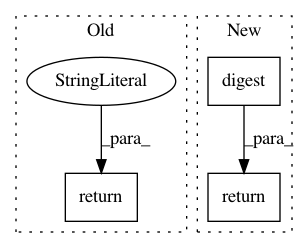

e30f2a04e97d4ea0a802abcf33ad626159b2a697,acoular/environments.py,Environment,_get_digest,#Environment#,45
Before Change
traits_view = View()
def _get_digest( self ):
return ""
def r( self, c, gpos, mpos=0.0):
Calculates distances between grid point locations and microphone
After Change
desc="speed of sound")
def _get_digest( self ):
return digest( self )
def _r( self, gpos, mpos=0.0):
Calculates distances between grid point locations and microphone
In pattern: SUPERPATTERN
Frequency: 3
Non-data size: 3
Instances
Project Name: acoular/acoular
Commit Name: e30f2a04e97d4ea0a802abcf33ad626159b2a697
Time: 2018-12-18
Author: gejohe@web.de
File Name: acoular/environments.py
Class Name: Environment
Method Name: _get_digest
Project Name: acoular/acoular
Commit Name: 3bd849fdba05f8f6ee5642f7f4c53dd139dce72c
Time: 2020-10-28
Author: s.jekosch@tu-berlin.de
File Name: acoular/grids.py
Class Name: ImportGrid
Method Name: _get_digest
Project Name: acoular/acoular
Commit Name: 3bd849fdba05f8f6ee5642f7f4c53dd139dce72c
Time: 2020-10-28
Author: s.jekosch@tu-berlin.de
File Name: acoular/grids.py
Class Name: MergeGrid
Method Name: _get_digest